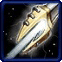

- Stats
- Production
- Strategy
- Lore
- Related
Armor: 1 |
 0/0 0 per second
0/0 0 per secondDamage: 0
Attacks: 0
Cooldown: 0
Targets: None
Attack Range: 0
Acceleration: 0
Collision Radius: 1.5
Requirements: Nothing
| Level | Level 1 | Level 2 | Level 3 |
| Minerals | 0 | 0 | 0 |
| Vespene Gas |  0 0 | 0 | 0 |
| Time |  0 0 | 0 | 0 |
| Damage Bonus | 0 | 0 | 0 |
| Total Damage | 0 | 0 | 0 |
Vespene Cost:
0Supply:
 0
0Produced From: Probe Build Time:
50Requirements: Gateway/Psionic Matrix
Unit Type: Armored, Mechanical, Structure, Ground
Requirements: Nothing
| Level | Level 1 | Level 2 | Level 3 |
| Minerals | 0 | 0 | 0 |
| Vespene Gas | 0 | 0 | 0 |
| Time | 0 | 0 | 0 |
| Armor Bonus | 0 | 0 | 0 |
| Total Armor | 1 | 1 | 1 |
Requirements: Levels 2-3 requires Twilight Council
| Level |  Level 1 Level 1 |  Level 2 Level 2 |  Level 3 Level 3 |
| Minerals | 150 | 225 | 300 |
| Vespene Gas | 150 | 225 | 300 |
| Time | 160 | 190 | 220 |
| Armor Bonus | +1 | +2 | +3 |
| Total Armor | 1 | 2 | 3 |
| Upgrade | Icon | Minerals | Vespene Gas | Time | Requirements |
| Warp Gate |  | 50 | 50 | 160 | Cybernetics Core |
| Hallucination | 100 | 100 | 80 | Cybernetics Core | |
| Air Weapons 1 |  | 100 | 100 | 160 | Cybernetics Core |
| Air Weapons 2 |  | 175 | 175 | 190 | Fleet Beacon |
| Air Weapons 3 |  | 250 | 250 | 220 | Fleet Beacon |
| Air Armor 1 |  | 150 | 150 | 160 | Cybernetics Core |
| Air Armor 2 |  | 225 | 225 | 190 | Fleet Beacon |
| Air Armor 3 |  | 300 | 300 | 220 | Fleet Beacon |
As of patch 1.3.3 Warp Gate now takes 160 seconds to research instead of 140.
Hallucination: Allows Sentries to create fake versions of certain Protoss units. See the Sentry page for more information.
Air Weapons 1-3: Upgrades the attacks of all Air units. See a unit's page to see specifics on damage increase, as it varies.
Air Armor 1-3: Upgrades the armor of all Air units. Each level increases armor by 1.
If you have any suggestions for more strategies, go ahead and post on the forums 'here'!
+1 Weapons vs Zerglings
When Zealots have a +1 weapon advantage versus Zerglings, they will kill Zerglings in two attacks instead of three. This makes Zealots very effecient against Zerglings until the zerg catches up in armor upgrades.
Because of this, there are a handful of timing attack that take advantage of the effecient +1 weapon zealots, forcing the zerg to make spines, roaches, or some other unit than zerglings unless the zerg wants to trade inefficiently.
+1 Weapons vs Zerglings
Sum text about how gosu this is
+1 Weapons vs Zerglings
Sum text about how gosu this is
- Overview
The cybernetics core provides upgrades for protoss aircraft and protoss cybernetic units. It also allows currently fielded Protoss probes to warp in more advanced technology structures in order to strengthen their base of opertaions.
Within the cybernetics core are the necessary construction materials, automated factories and the mysterious essence translators that bond the spirits of fallen protoss to the cold metal exoskeletons of the dragoons. Eventually, by focusing through the Khala, the fallen warriors can control the movements of the quadrupedal dragoon as naturally as if they were within their former bodies.
Source Information
Text information from the Starcraft Wiki.
Photo 1 created by Saejin Oh. Copyright: UDON Entertainment.
Photo 2 created by Samwise Didier. Copyright: Blizzard Entertainment.
| Protoss |
| Units |
| Nexus | Probe | Mothership |